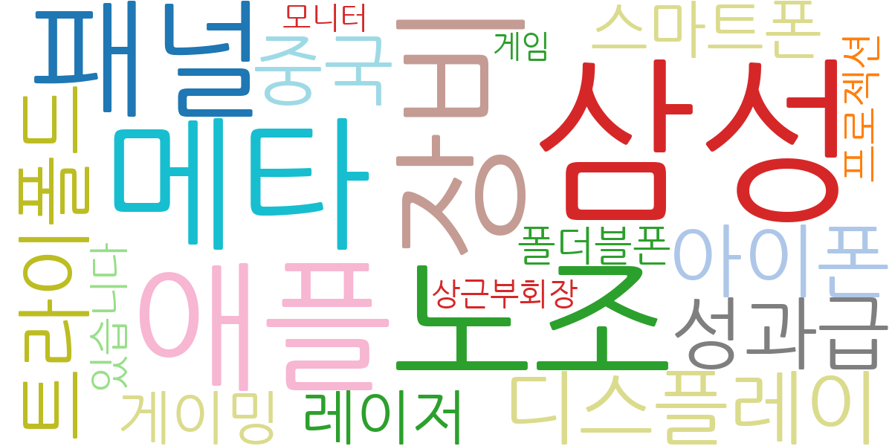
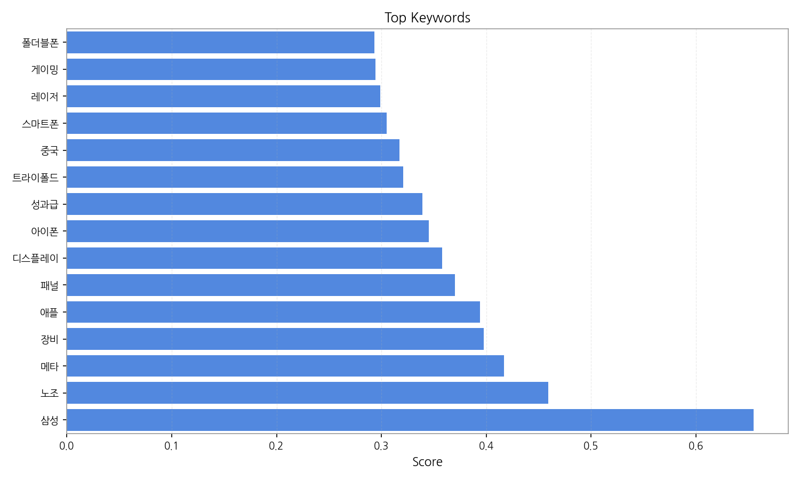
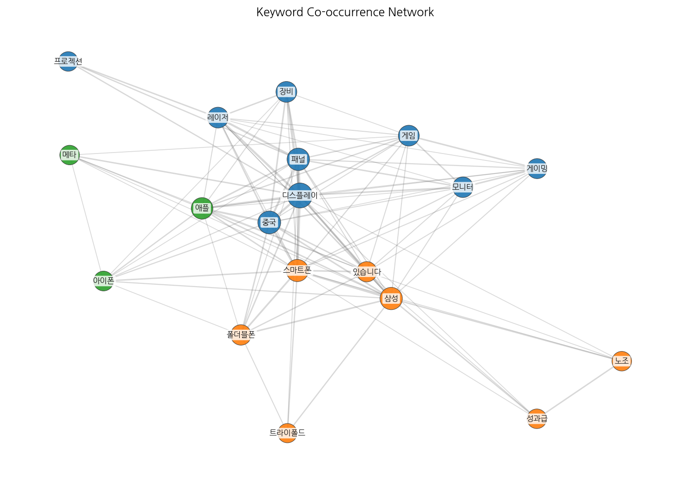
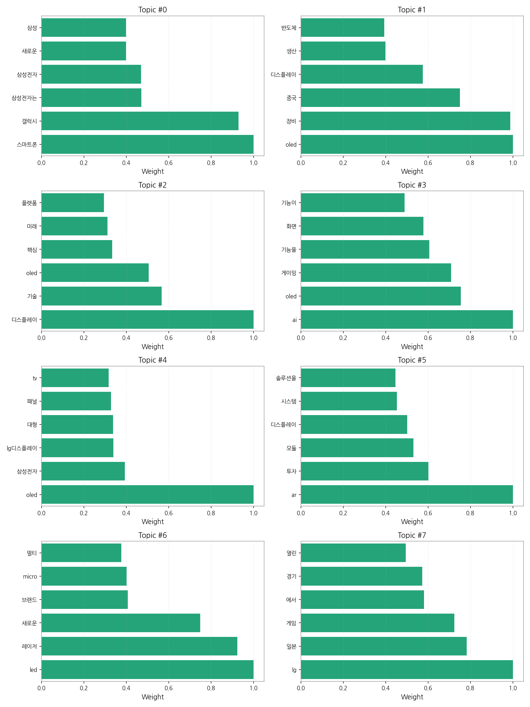

1. 핵심 맥락:
2. 최근 변화/스파이크:
3. 실무 인사이트:

| Rank | Keyword | Score |
|---|---|---|
| 1 | 삼성 | 0.655 |
| 2 | 노조 | 0.459 |
| 3 | 메타 | 0.417 |
| 4 | 장비 | 0.398 |
| 5 | 애플 | 0.394 |
| 6 | 패널 | 0.370 |
| 7 | 디스플레이 | 0.358 |
| 8 | 아이폰 | 0.345 |
| 9 | 성과급 | 0.339 |
| 10 | 트라이폴드 | 0.321 |
| 11 | 중국 | 0.317 |
| 12 | 스마트폰 | 0.305 |
| 13 | 레이저 | 0.299 |
| 14 | 게이밍 | 0.294 |
| 15 | 폴더블폰 | 0.293 |



1. 핵심 맥락:
2. 최근 변화/스파이크:
3. 실무 인사이트:
| Idea | Target | Value Prop | Score |
|---|---|---|---|
| AI 기반 디스플레이 공정 자동화 및 수율 개선 솔루션 | 디스플레이 제조 기업 (OLED, MicroLED) | AI 기반의 실시간 공정 데이터 분석 및 예측 모델을 통해 불량 발생 가능성을 사전에 감지하고, 공정 조건을 최적화하여 수율을 극대화하는 솔루션. 숙련된 엔지니어의 의존도를 낮추고, 생산 효율성을 향상. 경쟁사 대비 높은 정확도 및 빠른 분석 속도 제공. | 4.50 |
| 차량용 HUD(Head-Up Display) 증강현실 솔루션 | 글로벌 완성차 OEM (프리미엄 브랜드 중심) | 운전자 시야에 최적화된 AR HUD 솔루션 제공. AI 기반 상황 인지 및 예측 기술을 통해 운전자의 인지 부하를 최소화하고, 몰입감 높은 증강현실 경험을 제공하여 안전 운전 지원. 경쟁사 대비 넓은 시야각, 고해상도, 뛰어난 색 재현율을 제공하는 MicroLED 디스플레이 적용. | 4.20 |
| 메타버스 협업용 초고해상도 마이크로디스플레이 | 북미 빅테크 기업 (메타버스 플랫폼 사업자) | 초고해상도, 넓은 시야각, 낮은 지연 시간을 제공하는 마이크로디스플레이 솔루션. 몰입감 높은 메타버스 협업 환경을 구축하고, 장시간 사용에도 눈의 피로도를 최소화. 기존 LCD/OLED 대비 높은 에너지 효율 및 소형화 가능. | 4.00 |
| IT 기기용 폴더블 OLED 패널 솔루션 | 글로벌 IT 기기 제조사 (스마트폰, 태블릿, 노트북) | 내구성이 강화된 UTG(Ultra Thin Glass) 및 힌지리스 디자인을 적용한 폴더블 OLED 패널 솔루션. 주름 현상을 최소화하고, 다양한 폴딩 각도를 지원하여 사용자 편의성 극대화. 경쟁사 대비 얇고 가벼운 디자인, 뛰어난 화질 및 색 재현율 제공. | 3.80 |
| 퀀텀닷(QD) 기반 컬러 필터리스 MicroLED 디스플레이 | 프리미엄 TV 제조사, 디지털 사이니지 기업 | 퀀텀닷 물질을 활용하여 컬러 필터 없이도 고색재현율, 고휘도를 구현하는 MicroLED 디스플레이 솔루션. 광효율을 극대화하고, 제조 공정을 단순화하여 생산 비용 절감. 기존 MicroLED 대비 뛰어난 화질 및 에너지 효율 제공. | 3.50 |